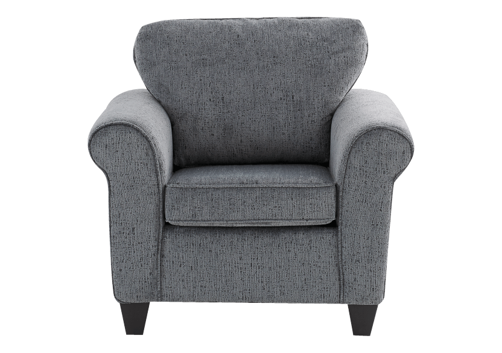
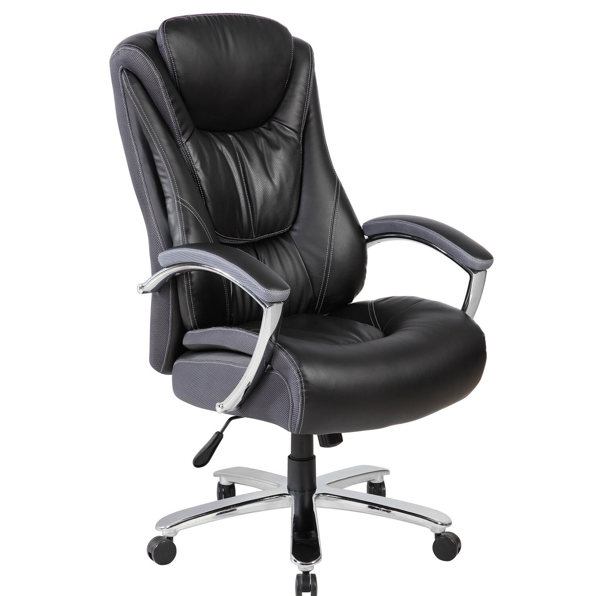
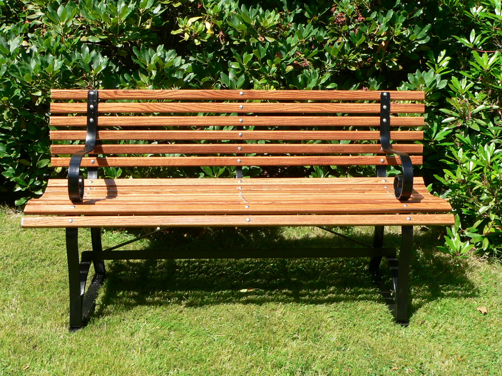

FAVOURITE TYPES OF CHAIRS
The Armchair
The Armchair is one of my favourite types of chair because it's very versatile and comfy. It works well in any room in a house, from the living room to the bedroom. The definition of an armchair is a chair with armrests.
Click the image to learn more about armchairs
The Office Chair
The Office Chair is another one of my favourites because it's mobile and adjustable, making it great for people of all sizes. Fun fact, office chairs were developed around the mid-19th century as more workers spent their time sitting at desks. This lead to the creation of several features not found on other chairs.
Click the image to learn more about office chairs
The Bench
The Bench was a great innovation in the world of chairs because it gives people a place to rest outside their homes. Benches can be found everywhere in a city, such as parks, on the street or in a hotel.
Click the image to learn more about benches